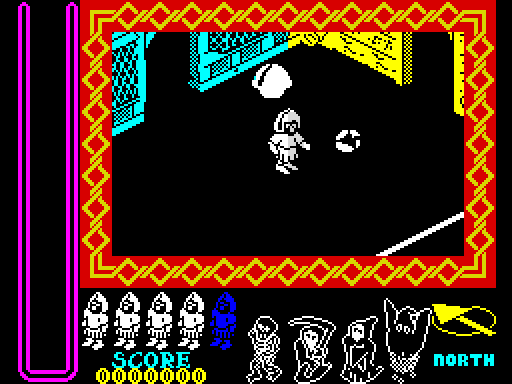

| Nightshade | How the game is put together |
Nightshade (1985) is the first of Ultimate's Filmation II games. Where Knight Lore, Alien 8 and Pentagram show one room at a time, Nightshade's town scrolls: the knight stays in the middle of the screen and the streets move under him. It keeps the earlier games' tune player, menu, key reading, sprite rows and several sound routines, but the town, how it is drawn, how things move through it, the object records and the quest are all its own. This page is the game's outline: the tape and its protection, a turn of the main loop, the object records and how each is updated, and where everything is in memory.
The tape's BASIC loader loads a loading screen and then four blocks: the game, 34,816 bytes at $6000; 43 bytes into the printer buffer at LOADER; one byte into the system variable NMIADD at NMIADD; and two into FRAMES at $5C78. Then PRINT USR 23424 runs the routine in the printer buffer. It turns the interrupts off for good, sets bit 7 of the R register, and unscrambles the game block a pair of bytes at a time: RLD swaps a nibble between the two, so a pair loaded as ab cd (a nibble a letter) becomes ac db. Then it moves the block down 512 bytes to ENTRY and jumps there. The build does the same to the tape's block and checks that the result is what the snapshot holds.
Each of the three small blocks is a check the game makes on itself, and a copy that skips any of them does not play. A fourth check is aimed at players rather than copiers. Each was tried in the simulator when this page was built, by undoing what the tape did:
| Check | Where | What the tape leaves | Undone in the simulator |
|---|---|---|---|
| FRAMES | START | FRAMES' middle byte $63. Interrupts are off from the loader on, so FRAMES never counts again | With the middle byte changed, START's RET went straight back to its caller, after 45 T-states. Left as the tape set it, the game went on into its menu |
| NMIADD | DISPATCH, for every object | $E9, JP (HL), in NMIADD. Every table of routines in the game is reached through a jump to it | With NMIADD zero, as the ROM leaves it, the game got as far as its first turn and never came round to a second: after five seconds of the game's time the processor was at $0074 |
| R's bit 7 | STOCK_BUILDINGS | R $BD: bit 7 set by the loader. The refresh counter counts only the low seven bits, so only a program's LD R,A can set it | With bit 7 clear, starting a game from the menu jumped to address 0: the Spectrum starts again from its copyright message. With it set, the game played |
| The lives | NEW_LIFE | the DEC (HL) that takes a life, at $CBDD, which each new life checks is still $35 | With a NOP there, the obvious infinite-lives poke, the knight's first death jumped to address 0 |
The number of lives is hidden too: a new game takes it from the opcode of the JR that closes the main loop, at $BEDD: $18 shifted right twice is 6, and the first life takes one of them.
There is no clock in the game at all. Interrupts are off from the loader on, there is no HALT to wait for the television frame, and nothing counts time but the turns themselves. NEW_GAME sets a game up and falls into MAIN_LOOP, one turn, which goes round for as long as the game lasts:
So a turn takes as long as it takes. Timed in the simulator when this page was built, 392 turns of walking (and now and then turning) in 49 cells spread across the town, in T-states:
| Part of the turn | Least | Mean | Most |
|---|---|---|---|
| every record updated | 24,241 | 37,342 | 100,608 |
| the finds, monsters, creature and bonus; the sound effect's note; the panel's colours | 566 | 1,272 | 3,200 |
| the town and everything in it drawn into the buffer | 69,355 | 172,741 | 288,888 |
| the knight coloured; a new life; the end of the quest | 818 | 818 | 818 |
| the buffers copied to the screen and cleared | 80,759 | 80,759 | 80,759 |
| the flash ended; the pause key read | 158 | 158 | 158 |
| the whole turn | 179,321 | 293,090 | 456,420 |
The mean turn is 84 milliseconds, about 12 turns a second; the quickest ran at 20 a second and the slowest at 7.7. The drawing is most of it, and it depends on how much of the town is built up round the knight: the game slows down among the buildings and speeds up in the open. Copying the buffers to the screen and clearing them costs exactly the same 80,759 every turn. Knight Lore, Alien 8 and Pentagram pad a quiet turn out with a delay (Alien 8); Nightshade has none.
Everything that moves is one of 23 records of 16 bytes from KNIGHT: half the size of the earlier games' records, since nothing in the town has a height or falls. Each kind of thing has its own records, and the order matters: a thrown object only ever looks for the villain four records on from its own, so the pairing of objects and villains is the order of the records (the quest).
| Records | From | What | |
|---|---|---|---|
| 0 | KNIGHT | the knight's legs | his whole update: the controls, turning, walking, throwing |
| 1 | KNIGHT_TOP | the knight's top | follows the legs; its own poses |
| 2-3 | ANTIBODIES | antibodies in flight | thrown by the knight |
| 4-7 | FINDS | finds in buildings | and, when a villain dies, its sparkles |
| 8 | BONUS | a bonus | a faster walk or the hits back |
| 9-12 | OBJECTS | the four objects | lying, carried (the record then empty) or thrown |
| 13-16 | VILLAINS | the four villains | each killed only by the object in the same place among the objects |
| 17-22 | MONSTERS | monsters | or the creature |
The fields, as the update routines use them:
| Offset | Field | What it is |
|---|---|---|
| +0 | graphic | picks the update routine (UPDATES) and the sprite (GRAPHICS); 0 is an empty record |
| +1, +2 | U | the high byte the town's column, the low byte the place across the cell |
| +3, +4 | V | the same: the high byte the row |
| +5 | speed | units a turn along the facing; a find keeps the type of cell it came from here |
| +6 | facing | bits 6-7: $00 +V, $40 +U, $80 -V, $C0 -U; the low bits a count -- the knight's turn delay, a monster's turns to its next change of course |
| +7 | flags | bit 0 stopped by a wall this turn, bit 1 drawn this turn, bit 5 heads for the knight, bit 6 mirrored, bit 7 upside down (never set) |
| +8, +9 | half-sizes | how far it reaches from its centre along U and along V |
| +A, +B | step | this turn's move along U and V, signed |
| +C, +D | drawing offset | added to where its centre projects, for the sprite's bottom left corner |
| +E, +F | where drawn | the pixel x and y it was drawn at |
One turn of real play, the knight walked about a built-up part of the town from cell (9,23) and the turn with the most records in use out of 240 traced: every record, in the order the main loop takes them, with its graphic, the routine that graphic picks, and the T-states that routine took. An empty record costs the jump to NO_UPDATE, which returns at once. The sounds are played inside the updates, and nothing else happens while they play: record 22, a monster appearing on the screen, spent 35,741 T-states on its note (APPEAR_SOUND).
| Record | Address | Graphic | Update routine | T-states |
|---|---|---|---|---|
| 0 | $BC8E | 29 | UPDATE_KNIGHT | 1,701 |
| 1 | $BC9E | 45 | TOP_FOLLOWS | 517 |
| 2 | $BCAE | 0 | NO_UPDATE | 125 |
| 3 | $BCBE | 0 | NO_UPDATE | 125 |
| 4 | $BCCE | 0 | NO_UPDATE | 125 |
| 5 | $BCDE | 0 | NO_UPDATE | 125 |
| 6 | $BCEE | 0 | NO_UPDATE | 125 |
| 7 | $BCFE | 0 | NO_UPDATE | 125 |
| 8 | $BD0E | 3 | HITS_BONUS | 799 |
| 9 | $BD1E | 7 | OBJECT_LYING | 416 |
| 10 | $BD2E | 6 | OBJECT_LYING | 416 |
| 11 | $BD3E | 5 | OBJECT_LYING | 416 |
| 12 | $BD4E | 4 | OBJECT_LYING | 416 |
| 13 | $BD5E | 108 | VILLAIN_WANDER | 4,029 |
| 14 | $BD6E | 104 | VILLAIN_WANDER | 3,989 |
| 15 | $BD7E | 100 | VILLAIN_WANDER | 2,502 |
| 16 | $BD8E | 96 | VILLAIN_WANDER | 4,029 |
| 17 | $BD9E | 122 | MONSTER112_UPDATE | 4,590 |
| 18 | $BDAE | 72 | WANDERING_MONSTER | 4,125 |
| 19 | $BDBE | 72 | WANDERING_MONSTER | 4,331 |
| 20 | $BDCE | 122 | MONSTER112_UPDATE | 4,591 |
| 21 | $BDDE | 120 | MONSTER112_UPDATE | 2,851 |
| 22 | $BDEE | 128 | APPEARING_UPDATE | 35,741 |

The screen after the turn in the table: 17 of the 23 records in use. The play area is the framed part; the panel below and down the left side is drawn straight onto the screen.
The graphic number is the whole of a record's kind: UPDATES gives each of the 158 graphics its update routine, and a thing changes what it is by changing its graphic -- a monster appearing counts up through 128-131 and then becomes a monster, anything destroyed becomes graphic 12, the start of a puff. The graphics come in runs of four frames or directions, and a run shares a routine:
| Graphics | Update routine |
|---|---|
| 0-1 | NO_UPDATE |
| 2 | SPEED_BONUS |
| 3 | HITS_BONUS |
| 4-7 | OBJECT_LYING |
| 8-11 | OBJECT_FLIGHT |
| 12-15 | VANISHING |
| 16-21 | UPDATE_KNIGHT |
| 22 | UPDATE_TOP |
| 23 | NO_UPDATE |
| 24-29 | UPDATE_KNIGHT |
| 30 | UPDATE_TOP |
| 31 | NO_UPDATE |
| 32-47 | TOP_FOLLOWS |
| 48-63 | FIND_WANDER |
| 64-79 | WANDERING_MONSTER |
| 80-95 | ANTIBODY_FLIGHT |
| 96-111 | VILLAIN_WANDER |
| 112-127 | MONSTER112_UPDATE |
| 128-131 | APPEARING_UPDATE |
| 132-135 | VILLAIN_DYING |
| 136-139 | CREATURE_UPDATE |
| 140-143 | SPARKLE_FLY |
| 144-151 | ENDING_VILLAIN |
| 152 | ENDING_PIT_FRONT |
| 153-157 | ENDING_PICTURE |
Every table of routines is reached the same way: DISPATCH looks the address up and jumps not to it but to NMIADD, where the tape's JP (HL) makes the jump. Besides UPDATES there are five small tables: what an antibody does to a monster (MONSTER_HIT_TABLE), the depth sort's outcomes (DEPTH_TABLE), and three by the knight's or a walker's facing -- coming to a stop (COAST_TABLE), turning towards the knight (TURN_TO_KNIGHT_TABLE) and stopping at the walls (MOVE_TABLE).
| From | To | Bytes | What |
|---|---|---|---|
| PRINTER_BUFFER | $5BFF | 256 | the printer buffer, with the loader's routine at LOADER |
| SYSTEM_VARIABLES | $5CCA | 203 | the system variables, two of them set by the tape: FRAMES and NMIADD |
| BASIC_PROGRAM | $5DFF | 309 | what is left of the BASIC loader, and the game's stack, which grows down into it |
| ENTRY | $5E03 | 4 | the entry |
| TOWN | $6203 | 1,024 | the town map: 32 rows of 32 cells, a byte each |
| DRAW_ORDER | $62A3 | 160 | the drawing order: 32 records of five steps |
| BUILDING_TABLE | $6575 | 722 | the building table, the box table and the boxes, and the edge picture under each tile |
| BUILDING14 | $6CB5 | 1,856 | the building definitions: two faces of eight columns of two tiles each |
| PANEL_CHARS | $7016 | 865 | the panel's frame, the font, the tile and graphic tables, the edge pictures |
| SPRITE152 | $A256 | 12,864 | the sprites, with the carried things' pictures and the panel's icons among them |
| TILE0 | $BB09 | 6,323 | the tiles the buildings are drawn from |
| BORDER_CHARS | $BBA9 | 160 | the border's characters |
| RANDOM | $BC8D | 228 | the variables |
| $BC8E | $BDFD | 368 | the 23 object records |
| START | $E5C3 | 10,182 | the code, with the notes and tunes, the menu, the text and the record templates in it |
| BUFFER | $F043 | 2,688 | the play area's pixel buffer: 112 lines of 24 bytes |
| ATTR_BUFFER | $F193 | 336 | its attribute buffer: 14 rows of 24 |
| ATTR_SPILL | $F1FF | 108 | a byte the colour fill spills into, and unused bytes |
| MIRROR_TABLES | $F7FF | 1,536 | tables for drawing mirrored at an even pixel, built at a new game |
| UNUSED_F800 | $F8FF | 256 | unused |
| REVERSE_TABLE | $F9FF | 256 | every byte reversed |
| SHIFT_TABLES | $FFFF | 1,536 | tables for drawing shifted by 2, 4 and 6 pixels |
The game's code runs from START to $E5C3; below it are the level data and the graphics, above it the buffers and the tables it builds at every new game (MAKE_TABLES). The stack is set once, at START, below the game, and is never set again: every game over leaves two bytes on it and every ending four, since those are jumped into from routines that were called. After 156 game overs in one sitting it has crept down over NMIADD and the game crashes (measured by stage 2 of this disassembly; see START).
| Knight Lore, Alien 8, Pentagram | Nightshade | |
|---|---|---|
| The world | rooms of blocks, one at a time | a scrolling town of 32 by 32 cells (TOWN) |
| Heights | everything has a Z, and falls | none |
| Object records | 40, 56 and 54 records of 32 bytes (Knight Lore, Alien 8) | 23 of 16 |
| Drawing | only what changed, redrawn in rectangles | the whole play area every turn |
| Pacing | a delay pads out a quiet turn | none: a turn takes what it takes |
| Dispatch | JP (HL) in the code | JP (HL) in NMIADD, loaded from the tape |